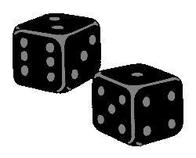
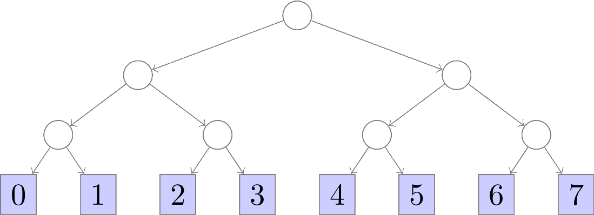
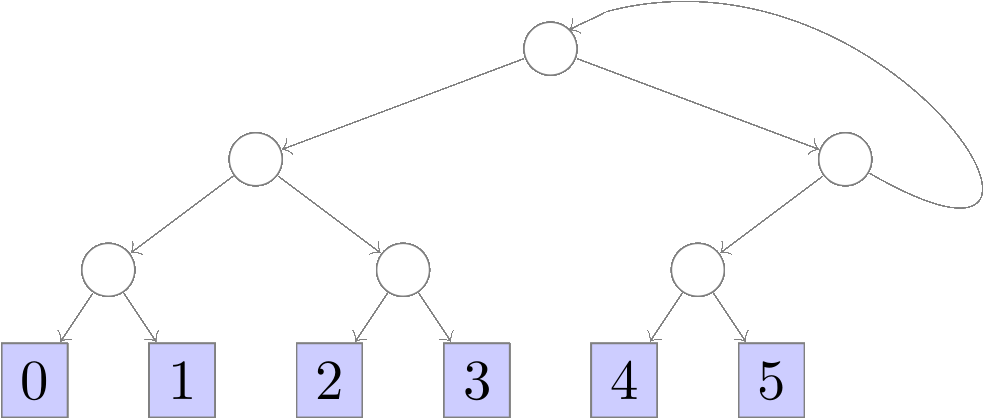
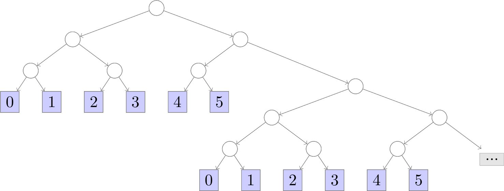

Rolling the Bones
One of the things that came out of my PhD research is a framework (part of the overall Zar probabilistic programming system) for building samplers for discrete probability distributions with formal proofs of correctness in Coq. One such example of a discrete distribution is the n-sided die.
Consider the following hypothetical: Suppose you want to roll a 6-sided die but you don’t have one lying around. You do have a coin though, which presumably is not biased (i.e., it is fair, with equal probability of flipping heads or tails). How could you simulate rolls of the die using only the fair coin?
Samplers built with Zar can be thought of as fair coin transformers,
taking as input a fair coin (represented as a stream of uniformly
distributed Booleans where true stands for heads and false for
tails) and producing as output a stream of samples from the desired
probability distribution. The proofs of correctness say that as long
as the input coin is fair, the output samples will indeed be
distributed according to the intended distribution.
In this article, we’ll look at how Zar simulates an n-sided die from a fair coin, and how to use the Zar OCaml package to generate samples that are formally proved to be uniformly distributed. Zar supports sampling from more than just uniform distributions, but we’ll focus on the uniform case (“rolling an n-sided die”) for now.
You might think that uniform sampling is trivial and shouldn’t require formal verification, but the reality is that bugs in uniform samplers such as “modulo bias” are a notorious vulnerability in cryptographic systems, and no amount of testing can ever guarantee their absence. The samplers built with Zar come with a priori formal guarantees of the accuracy of their output distributions, which in the case of the n-sided die means no modulo bias, period.
Simulating an N-sided Die
Let’s look at an algorithm for simulating an n-sided die. We’ll start
with the special case of when n is a power of 2, and then
generalize from that to to any n > 0.
Dyadic Dice
When n is a power of 2, the solution is easy: flip the coin
lg(n) times and interpret the resulting string of outcomes as the
bits of a binary encoded integer, where heads denotes 1 and
tails denotes 0. For example, to simulate an 8-sided die (with
values ranging from 0 to 7), we roll the coin lg(8) = 3 times to
generate a bit sequence such as 010 (interpreted as the integer 2)
or 110 (interpreted as 6). We can encode this process as a
complete binary tree where each branch represents a flip of the coin
and each leaf contains a possible output in the range [0,7):

From this representation we clearly see that all possible values in
the range [0,7) have probability exactly equal to (1/2)³ = 1/8.
Rejection Sampling
But what if n isn’t a power of 2? One approach is to flip more
bits than are actually needed, and whenever the resulting sample
exceeds n simply throw it away and try again. I.e., implement a
rejection sampler:
Flip
lg(n)+1bits to obtain a bit sequence representing integerk.If
k < n, acceptkas the sample. Otherwise, rejectkand return to step 1.
We’re essentially just creating an m-sided die where m is the the
first power of 2 greater than n and wrapping it in a loop that
repeats when the sample produced is ≥ n. We can encode rejection
samplers too as binary trees (though not necessarily complete binary
trees) where rejections loop back to the root of the tree. E.g., for a
6-sided die:

The probability of any k ∈ [0,6) is (1/8) / (3/4) (the
unnormalized probability 1/8 of k being produced by the
underlying dyadic sampler, normalized by the probability of acceptance
3/4) which is equal to 1/6. Technically, the above diagram isn’t
a tree because
it contains a cycle. However, we can think of it as a convenient
notation for the binary tree that infinitely repeats a copy of itself:

So it really is a tree (with repeating self-similar structure) as long as you allow for infinite trees, which are no problem in a lazy language like Haskell and can easily be encoded using “thunks” in non-lazy languages or by coinductive types in proof assistants like Coq and Agda.
A minor downside of rejection sampling is that termination isn’t truly
guaranteed. For example, the 6-sided die sampler conceivably could
take the rejection path at every iteration and loop forever without
ever producing a sample. That would be rather unlikely,
though. Indeed, the probability of rejecting n times in a row is
(1/4)ⁿ, which tends to 0 as n goes to +∞. Thus, the
probability of rejecting infinitely many times is 0, and by the
complement the probability of eventually terminating after some n
steps is 1. In other words, the 6-sided die terminates “almost
surely”, which for our
purposes is good enough for it to be practically useful.
The Zar OCaml Package
The Zar OCaml package provides a simple wrapper API around formally verified samplers extracted from Coq. The easiest way to get it is through opam:
opam install zarOnce installed, you can simply list zar as a dependency in your dune
project to gain access to everything in the Zar namespace. A sample
dune project containing the code in this article can be found
here.
Currently (although this may change in the future), Zar defines its own stream type (see stream.mli for the full interface):
(** Streams / Lazy infinite lists. *)
type 'a stream =
| SCons of 'a * (unit -> 'a stream)Recall that Zar samplers can be thought of as fair coin
transformers. The basic construction for the n-sided die is therefore
given by die_transformer:
val die_transformer : int -> bool stream -> int streamFor any positive n, die_transformer n is a function that
transforms a stream of fair coin flips into a stream of n-sided die
rolls. Zar provides a default source of fair coin flips using OCaml’s
Random module:
(** Default uniformly distributed random bit stream. *)
val bits : unit -> bool stream
(** Initialize PRNG used for default bit stream. *)
val seed : unit -> unitThe following code generates a list of 10 rolls of a 6-sided die by
applying die_transformer 6 to the default bit stream bits ():
let die = Zar.die_transformer 6 @@ Zar.bits () in
let samples = Zar.take 10 die in
(* Do something with samples *)The shortcut function die does the same thing:
let samples = Zar.take 10 (Zar.die 6) in
(* Do something with samples *)The Zar OCaml package supports not only n-sided dice but also biased coins and general finite distributions specified by lists of weights, all formally verified in Coq. You can learn more about them in the package README.